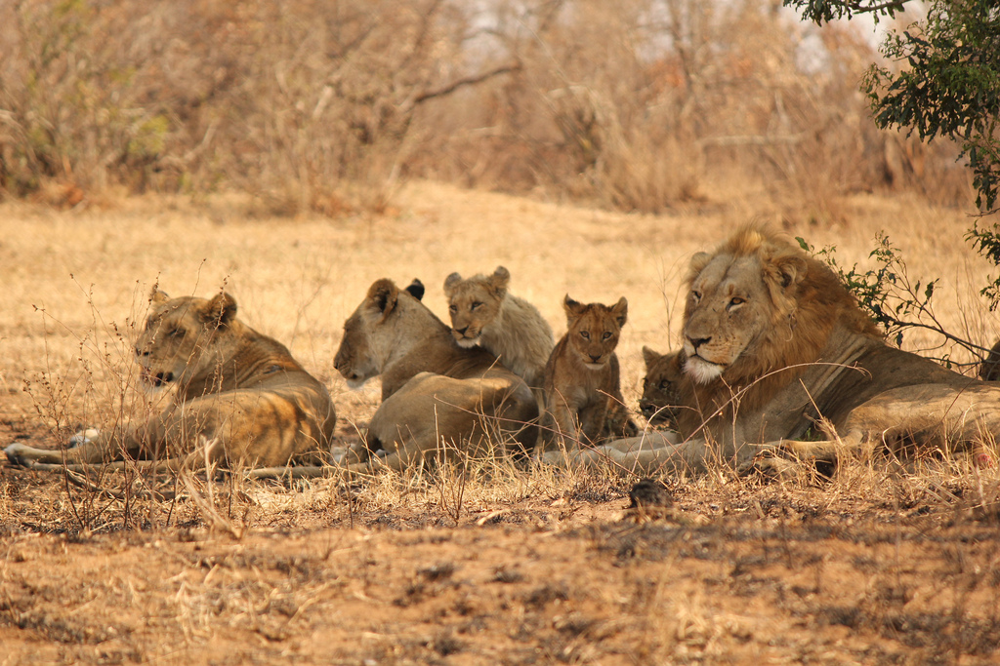
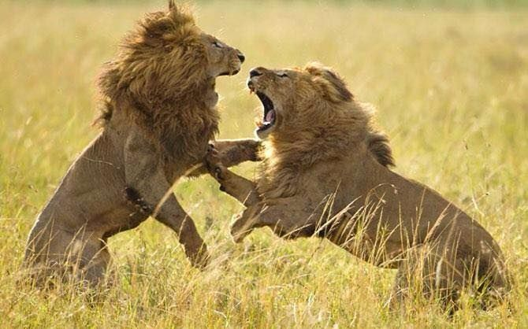
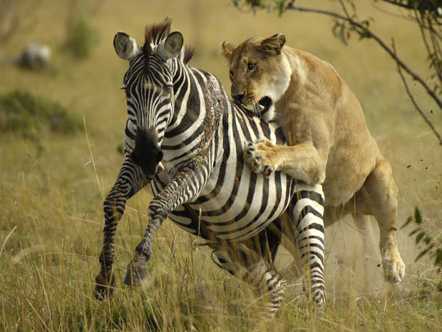
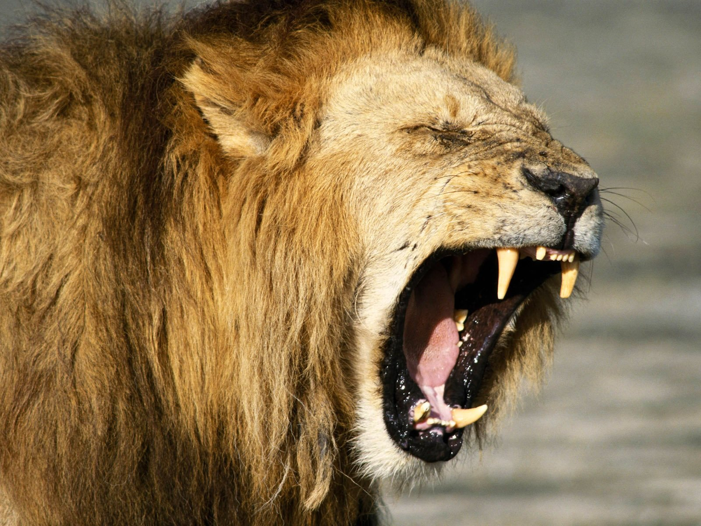

 Dos vários felinos conhecidos, o leão destaca-se por ser o único que forme um grupo social, tendo como exceção leões velhos, feridos e doentes que costumam viver em solitário. Os grupos podem corresponder de entre 5 a 40 indíviduos, distribuindo-se por entre 4 a 12 fêmeas, entre 1 a 6 leões e cerca de uma dúzia de crias.
 Quando um macho atinge a sua maturidade sexual, que normalmente corresponde a 3 ou 4 anos de idade, este é expulso do seu grupo, ao contrario das leoas que permanecem. Após a sua expulsão, este parte em busca de um novo grupo, acabando por lutar pela posição de leão dominante quando encontrar um grupo com um leão velho ou fraco. Após substituir o antigo leão, o macho mata todas as crias do rival, o que leva à reprodução das fêmeas com o mesmo.
O macho é responsável pela demarcação do territorio, feita por rugidos e jatos de urina, e pela defesa do mesmo enquanto que as fêmeas são encarregues da caça e da criação da crias.
 Tanto o leão como a leoa podem caçar. No entanto, devido ao seu tamanho e a sua juba, os machos perdem agilidade necessária para a caça. Assim esta fica a encargo das leoas. Estas caçam em grupos de 2 a 8 indivíduos, o que leva a utilização de táticas de emboscada e de ação em grupo para capturar as presas.
Numa caçada, uma das primeiras coisas que as leoas tem de fazer é o reconhecimento do terreno para garantir que as presas fiquem encurraladas. Depois, todas as leoas, à exceção de uma, dispõem-se a favor do vento , de modo a certificarem-se de que as presas não vão para essa direção. No entanto, a leoa em falta esconde-se no lado oposto , a favor do vento. Assim quando as leoas espantarem as presas, a que sobrou ataca as presas que vão na sua direção. Esta derrube a presa com a força do seu corpo e morde-la pelo pescoço de modo a asfixia-la.
Feita a caçada é distribuída a comida pelo grupo, sendo os leões os primeiros a comer, seguido das fêmeas e por fim as crias.
 Para comunicarem os leões utilizam tanto sons como também gestos táteis.
No que toca aos sons, o leão utiliza o rosnado, a sibilação, o rugido, o latido rosnado, a tossidela e o miado, sendo este ultimo o primeiro som feito pelas crias. Ao rugirem os leões seguem um certo padrão começando com um longo rugido pouco profundo que se torna numa série de outros mais curtos. Este é usado tanto para aviso e defesa do território como para coordenar a caçada.
Por outro lado, estes também se costumam esfregar e lamber uns aos outros, sendo esta uma forma de saudação observável quando retornam da caçada para o grupo. As partes mais lambidas são a cabeça e o pescoço, o que pode ser entendido como uma utilidade visto que este não consegue lamber estas áreas.